Cours 12 (Trématodes) + Cours 13 (Amibes) · Pr Marteau · DFGSM3 · Figures du cours intégrées.
Partie 1 — Trématodes (Bilharzioses)
Généralités sur les trématodes
Vers plats non segmentés, à sexes séparés (gonochoriques) — ≠ cestodes hermaphrodites
2 grandes familles : Schistosomes (bilharzioses) et Distomatoses (douves, hors programme D1)
Bilharzioses = 2e–3e cause de mortalité parasitaire mondiale
📌 Le prof traite uniquement les schistosomes (bilharzioses). Les douves (Fasciola hepatica, 3–4 cm, foie) sont hors programme D1 — mentionnées mais non lues.
Bilharzioses — Introduction et cycle biologique
Caractéristiques générales
Trématodes gonochoriques hématophages — vivent en couple dans les plexus veineux de mammifères
Le mâle forme un canal gynécophore — la femelle s'y loge pour l'accouplement
Après ponte : les œufs franchissent la paroi des organes voisins → symptômes
230 millions de cas/an · 5 espèces pathogènes chez l'homme · Taille ♂ 5–20 mm, ♀ 10–30 mm · 200 000–300 000 décès/an
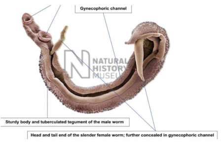
Couple de schistosomes — mâle tuberculé formant le canal gynécophore ; femelle fine insérée à l'intérieur. Corps robuste + tégument tuberculeux du mâle. (Natural History Museum)
Cycle biologique (à connaître)
Les œufs émis dans l'environnement (urines ou selles) → éclosent en miracidiums dans l'eau douce
Le miracidium pénètre un mollusque gastéropode d'eau douce (hôte intermédiaire)
Dans le mollusque → multiplication → libération de furcocercaires (larves bifurquées)
Les furcocercaires pénètrent à travers la peau humaine (contact avec eau douce)
Perte des queues → schistosomules → migration sanguine vers plexus veineux → maturation adultes
Accouplement → ponte → cycle recommence
📌 Infection par plusieurs centaines de furcocercaires simultanément (baignade en lac/rivière) → coexistence mâles + femelles.
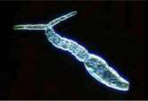
Furcocercaire : forme larvaire bifurquée, infectante pour l'homme par voie transcutanée.
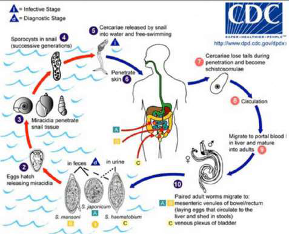
Cycle complet : œufs → miracidium → mollusque → furcocercaires → schistosomules → adultes dans les plexus veineux → ponte. (CDC)
Espèces, géographie, localisation
📌 Les 2 premières espèces sont à retenir ++ : S. haematobium et S. mansoni.
Localisation des adultes, type de bilharziose et voie d'élimination des œufs selon l'espèce.
Espèce
Type de bilharziose
Localisation (plexus)
Œufs éliminés
Géographie
S. haematobium2/3 des cas
Urogénitale
Plexus veineux urogénital
Urines
Afrique subsaharienne, péninsule arabique
S. mansoni
Intestinale-hépatique
Plexus mésentérique inférieur
Selles (côlon)
Afrique, Amérique du Sud
S. intercalatum
Rectale, intestinale
Plexus périrectal
Selles (rectum)
Congo, Gabon
S. japonicum et S. mekongi
Artério-veineuse
Plexus mésentérique supérieur
Selles (grêle)
Asie
S. mansoni introduit en Amérique du Sud via le commerce triangulaire (hôte intermédiaire Biomphalaria déjà présent). Cas de bilharziose en Corse car mollusques présents.
Physiopathologie
Les œufs se logent dans la paroi des organes → réaction immunitaire = granulome péri-ovulaire
Bilharziose urogénitale : A = hématurie (urines sanglantes vs normales) ; B = cystoscopie montrant les granulomes sur la paroi ; C = échographie rénale ; D = urographie intraveineuse.
Formes extra-intestinales (migration erratique des parasites)
S. haematobium : 150 × 60 µm, ovale, éperon terminal court, transparent, incolore, coque peu épaisse, embryon cilié (miracidium).
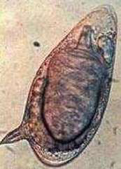
S. mansoni : 140 × 60 µm, éperon latéral grand, base large, pointu, toujours du côté de l'extrémité la plus arrondie.
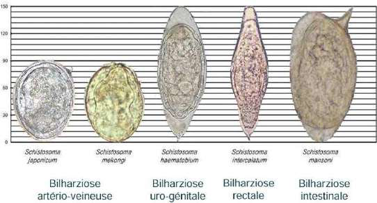
Comparatif morphologique des 5 espèces : S. japonicum et mekongi → œufs sphériques ; S. intercalatum → plus long ; S. haematobium → éperon terminal ; S. mansoni → plus large, éperon latéral.
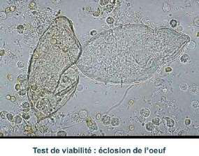
Test d'éclosion (30 °C, 30 min dans l'eau) : simuler les conditions d'éclosion pour apprécier la viabilité des œufs (œufs vivants = miracidiums ciliés visibles en sortie).
Négativation de la sérologie 6–18 mois après traitement
Traitement et surveillance
Traitement
Praziquantel (Biltricide®) — efficace sur tous les schistosomes adultes
40 mg/kg per os en 2 prises en 1 jour (bilharzioses urogénitale et intestinale)
60 mg/kg en 3 prises en 1 jour (bilharzioses artério-veineuses)
Surveillance post-traitement
À 2 mois, 6 mois, 12 mois
Persistance d'hématurie, remontée de l'éosinophilie ou positivité des EPU/EPS au-delà de 3 mois → reprendre le traitement
12 mois en général suffisants pour guérison
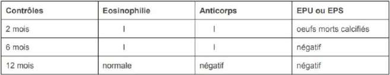
Contrôles post-praziquantel : éosinophilie ↓ progressive, anticorps ↓, EPU/EPS négatif à 12 mois (œufs morts calcifiés encore possibles à 2 mois).
Partie 2 — Amibes (Amoebose)
Généralités sur les amibes
Du grec amoibê = transformation
Protozoaires simples, reproduction asexuée par fission binaire (division en 2)
Classe : Rhizopodes (parmi les 4 grandes classes de protozoaires : Rhizopodes / Flagellés / Ciliés / Sporozoaires)
2 modes de vie : parasitaires (dans un hôte) ou libres dans l'environnement (certaines pathogènes si pénétration)
Morphologie
Se déplacent par pseudopodes : extension de la membrane → le contenu cellulaire migre dedans → mouvement amiboïde lent
2 types de cytoplasme : endoplasme (organites) + ectoplasme (d'où partent les pseudopodes)
Se nourrissent par phagocytose (particules, hématies) et pinocytose (liquides)
Éliminent leurs déchets azotés sous forme d'ammoniac par diffusion
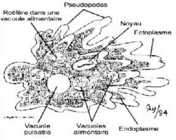
Schéma d'amibe : pseudopodes (extensions membranaires locomotrices), distinction endo/ectoplasme, vacuoles alimentaires (phagocytose de bactéries et de rotifères), vacuole pulsatile.
Classification des amibes
Type de noyau
Genre
Espèces clés
Pathogénicité
Noyau type « Entamibe » Membrane périphérique + chromatine + caryosome petit central/excentré
Entamoeba
E. histolytica +++ E. dispar, E. moshkovskii E. hartmanni, E. coli, E. polecki
E. histolytica = pathogène E. dispar/moshkovskii = non démontré
Noyau type « Limax » Membrane mince + gros caryosome central
Pseudolimax (= Iodamoeba butschlii)
Iodamoeba butschlii
Non pathogène
Endolimax
Endolimax nanus
Non pathogène
⚠️ E. histolytica, E. dispar et E. moshkovskii sont morphologiquement identiques au microscope → EPS rendu « E. histolytica/dispar » = traiter dans le doute (sauf CHU capable de faire PCR de différenciation).
Mobile, hématophage (phagocyte hématies), ulcère la muqueuse colique, passe dans le sang · très fragile → EPS dans les 30 min
Pathogène (amoebose maladie)
E. histolytica minuta (végétative non pathogène)
10–15 µm
Non hématophage, dans la lumière colique · peut évoluer en histolytica ou donner des kystes
Non pathogène (mais peut évoluer)
Forme kystique (résistance + transmission)
10–15 µm
Immobile, infestante · résistante eau, chaleur, suc gastrique · survie jusqu'à 153 jours entre 12–22 °C · élimination : jusqu'à 6 millions de kystes/100 g selles
Transmission (oro-fécale)
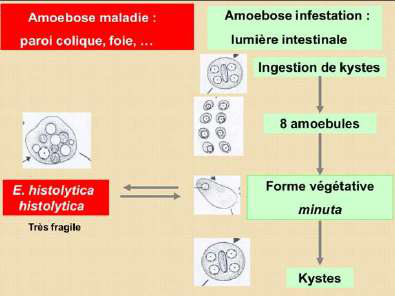
Cycle d'E. histolytica : ingestion de kystes → 8 amoebules → forme végétative minuta (lumière intestinale = amoebose infestation) → évolution possible en E. histolytica histolytica (amoebose maladie : paroi colique, foie...) ou en kystes.
Transmission
Mode principal : fécal-oral (péril fécal) — eau ou aliments contaminés
Possible transmission sexuelle (pratiques orales/anales)
Réservoirs : homme + milieu extérieur
Épidémiologie
Répartition : ceinture tropicale — Inde, Amérique centrale, Est Asie, Chine, Afrique centrale
500 millions colonisés par E. histolytica/dispar mais seulement 1–20 % vraiment par E. histolytica
40 000–100 000 décès/an · 3e parasitose mondiale en termes de mortalité
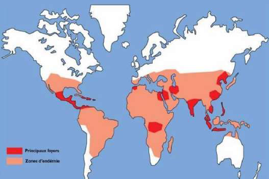
Répartition géographique de l'amibiase : foyers principaux (rouge) en Inde, Amérique centrale, Afrique sub-saharienne, Asie du Sud-Est ; zones d'endémie (rose) plus larges.
Facteurs favorisant le passage amoebose simple → amoebose maladie
Liés à l'hôte :
Malnutrition (région tropicale)
Foyers hémorragiques du côlon
Infections bactériennes ou virales associées
Liés au parasite :
Souche potentiellement plus pathogène
Adhérence aux cellules intestinales
Lyse par protéines protéolytiques
Physiopathologie de l'amibiase
Mécanisme d'invasion
Lectines : adhésion à la paroi colique → formation de pores dans les membranes des entérocytes → mort cellulaire en quelques minutes
Cystéine-protéinases : diffusion des amibes à travers la paroi digestive → ulcérations → passage en circulation veineuse
E. histolytica libère 10 à 1 000 fois plus d'enzymes que E. dispar → invasion muqueuse beaucoup plus efficace
Lésions intestinales
Inflammation → érosion → ulcération → abcès sous-muqueux « en bouton de chemise » (visible à la coloscopie)
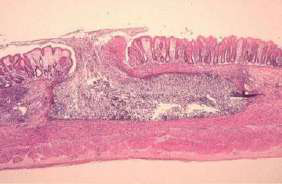
Coupe histologique : muqueuse normale à gauche ; à droite, déformation et envahissement de la muqueuse colique par les amibes (abcès sous-muqueux).
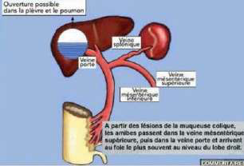
Dissémination : lésions muqueuses coliques → amibes dans veine mésentérique → veine porte → foie (abcès lobe droit ++) → perforation possible dans la plèvre/poumon.
Abcès hépatique amibien
Adhérence aux hépatocytes → destruction du parenchyme → hépatite parenchymateuse diffuse
Ténesme (contracture douloureuse du sphincter anal), emprainte colique
État général conservé au début
📌 2 types de diarrhées : cholériforme (liquide profuse, mécanisme toxinique) ≠ dysentérique (pâteuse, sang possible — c'est celle de l'amibiase).
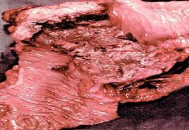
Pièce de résection colique : à gauche muqueuse normale ; à droite, envahissement amibien avec déformation et nécrose de la muqueuse (amibiase intestinale). Lavement baryté : image en « piles d'assiettes ».
Secondaire à l'amibiase intestinale (parfois point d'entrée révélateur). Délai d'apparition : 10 jours à 30 ans.
Hépatite amibienne diffuse (pré-suppurative) :
Début brutal
Triade de Fontan : douleur hypochondre droit « en bretelle » + fièvre modérée + hépatomégalie douloureuse
AEG variable
Abcès amibien du foie (plus fréquent) :
AEG, hépatomégalie douloureuse
Syndrome pleuro-pulmonaire droit (ascension coupole)
Syndrome inflammatoire (VS ↑, CRP ↑)
Hyperleucocytose à PNN (≠ éosinophilie car amibes petites)
Imagerie de l'abcès hépatique
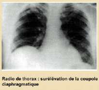
Radio de thorax : surélévation de la coupole diaphragmatique droite par le foie augmenté de volume.
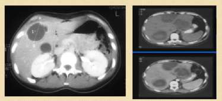
TDM abdominal : zone(s) hypodense(s) bien limitées correspondant à l'abcès hépatique amibien (très bien visualisées aussi à l'IRM).
📌 Diagnostic de l'abcès hépatique : EPS inutile (amibes plus dans l'intestin → négatif). Repose sur la sérologie amibienne +++ et l'imagerie. Normalisation échographique en 1–3 mois sous traitement.
Diagnostics différentiels : abcès bactériens, cancer primitif du foie, cirrhose décompensée, kyste hydatique surinfecté.
Amibiase pleuro-pulmonaire
Secondaire +++ (perforation de l'abcès hépatique à travers le diaphragme → localisation droite)
Ou primaire (amibes atteignent directement les poumons)
Peut s'ouvrir dans les voies aériennes → vomique brun chocolat
Abcès pleuro-pulmonaire base droite avec niveau hydroaérique
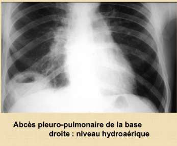
Amibiase pleuro-pulmonaire : radio de thorax montrant un abcès de la base droite avec niveau hydroaérique (collection liquidienne + air).
Rechercher les formes hématophages (E. histolytica histolytica) +++ — selles glairo-sanglantes
Forme très fragile → examen immédiat dès réception du laboratoire (dans les 30 min)
Rechercher aussi les kystes et formes minuta non hématophages
Ne pas confondre : histolytica (grande 40 µm) avec E. coli, hartmanni, polecki, nana, butschlii (non pathogènes)
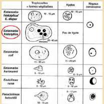
Tableau comparatif morphologique (microscopique) des trophozoïtes et kystes des principales amibes intestinales. E. histolytica/E. dispar (grande, entourée) vs les non-pathogènes plus petites.
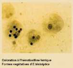
Coloration à l'hématoxyline ferrique : formes végétatives d'E. histolytica. Le noyau avec caryosome central et la chromatine périphérique sont bien visibles.
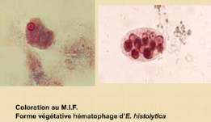
Coloration au MIF : formes végétatives hématophages d'E. histolytica — les hématies phagocytées sont visibles à l'intérieur des trophozoïtes (= diagnostic de la forme pathogène).
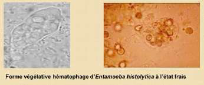
Forme végétative hématophage d'E. histolytica à l'état frais : hématies englobées dans la vacuole alimentaire. Ce critère (hématies phagocytées) est le seul permettant d'identifier formellement E. histolytica morphologiquement.
Différenciation E. histolytica / E. dispar / E. moshkovskii
Morphologie : forme hématophage (hématies phagocytées) = E. histolytica · Sinon indifférenciable
Typage isoenzymatique
Typage immunologique : ELISA (antigène)
PCR sur les selles (ARNr 18S spécifique) — simple ou multiplex
📌 Conduite à tenir : résultat « E. histolytica/dispar » au labo de ville → traiter dans le doute. CHU avec PCR disponible → attendre PCR avant décision.
Diagnostic sérologique (abcès hépatique +++)
Fonctionne très bien car abondance d'anticorps anti-amibes
ELISA, latex, immunofluorescence indirecte
Utile pour diagnostic ET surveillance
Diagnostic anatomopathologique (ponction de kyste)
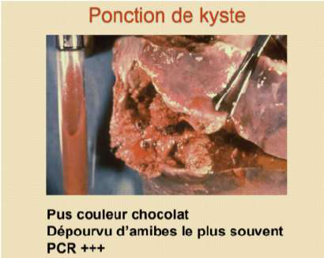
Ponction d'abcès amibien du foie : pus de couleur brun chocolat, dépourvu d'amibes le plus souvent (amibes en périphérie) mais PCR très positive. À comparer avec kyste hydatique : liquide transparent « eau de roche ».
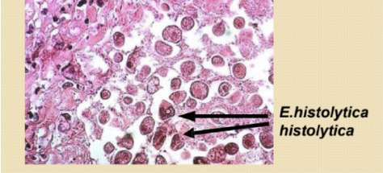
Coupe de biopsie de muqueuse : E. histolytica histolytica visibles au milieu des entérocytes (flèches noires). Diagnostic histologique possible mais rarement nécessaire en pratique.
PCR (diagnostic moléculaire)
PCR simple : amplification ARNr 18S spécifique → différencie E. histolytica / E. dispar / E. moshkovskii
PCR multiplex : détecte simultanément plusieurs parasites
Amibes libres en pathologie humaine
📌 Amibes libres de l'environnement → pathogènes si pénétration lors d'une baignade en eau douce contaminée (ingestion, voie auriculaire, nasale).
Amibe libre
Pathologie
Terrain
Naegleria
Méningoencéphalite amibienne primitive
Immunodéprimés
Acanthamoeba
Méningoencéphalite amibienne granulomateuse
Immunodéprimés
Kératite amibienne
Immunocompétents porteurs de lentilles mal désinfectées +++
Otite
Immunocompétents
⚠️ Acanthamoeba + lentilles mal désinfectées → kératite chez immunocompétent : contexte classique à connaître.